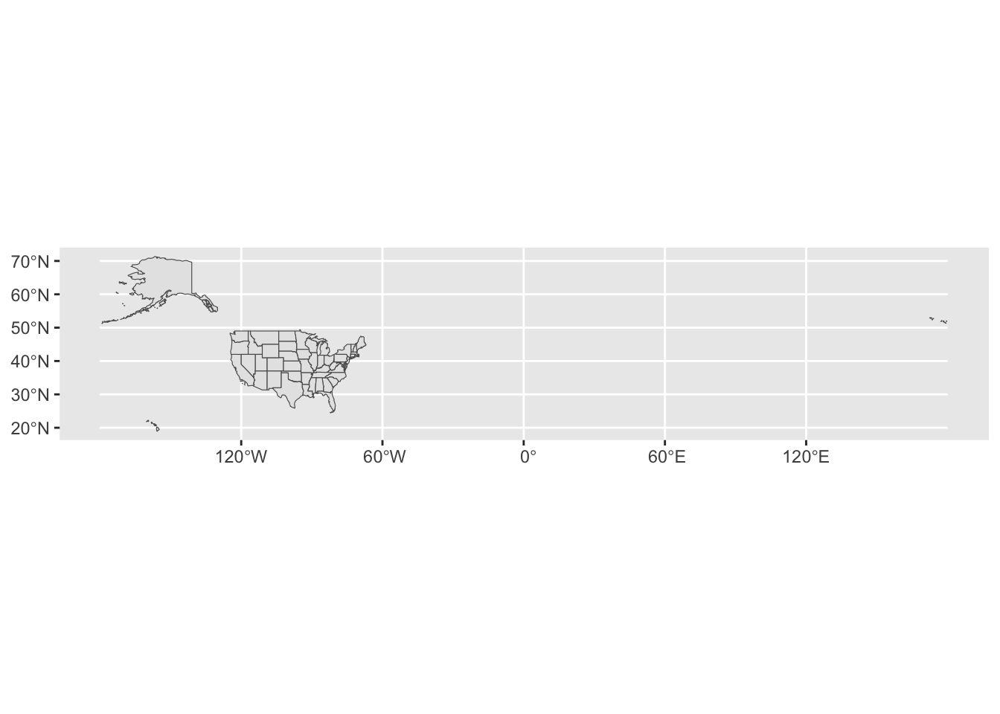
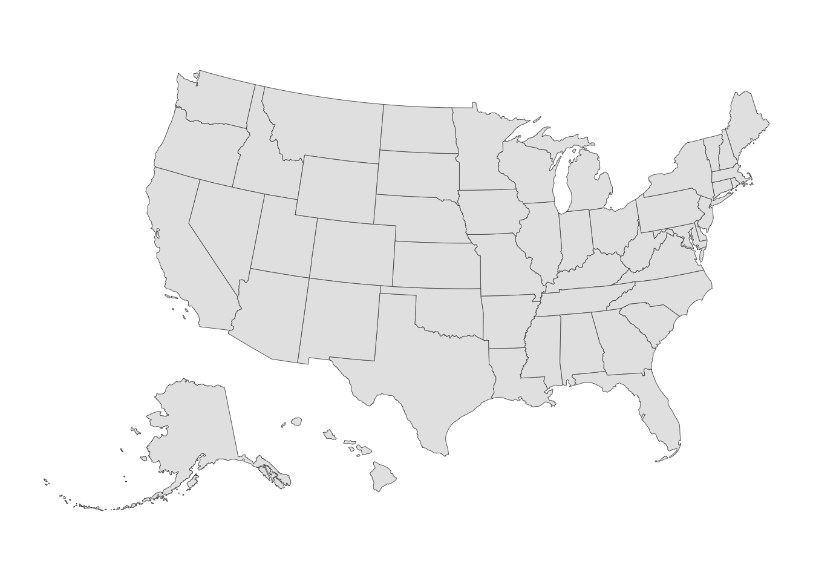
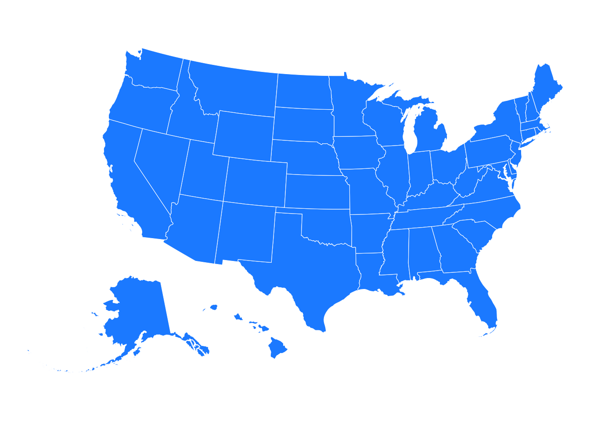

library(tidyverse)
library(haven)
library(tigris)
library(rnaturalearth)
library(tidycensus)
library(ggthemes)
library(scales)
library(ggrepel)
statemap <- states(cb = TRUE, resolution = "20m", progress_bar=FALSE) |>
filter(NAME != "Puerto Rico") 
5 Choropleth Maps
Choropleth maps provide another form of data visualization in a univariate sense: Variation across geographic units. Examples of geographic units include U.S. states, counties, or congressional districts. Across the world, we can examine variation across countries or regions. We can also zoom in on particular continents to examine variation across countries.
5.1 U.S. Maps with the tigris Package
Many packages and sources exist for generating U.S. national map objects. A good one-stop shop, however, is the tigris package, which was created by Kyle Walker. His book, Analyzing US Census Data: Methods, Maps, and Models in R, is an invaluable resource for U.S. maps and data at numerous subnational geographic units (Walker 2023). Walker also created the tidycensus R package, which imports U.S. Census data into R, integrates that data with map object, and thus permits generation of choropleth maps using Census data.
tigris can generate U.S. national map objects, state map objects, or map objects with other subnational geographic entities. I will begin with a national map with states as the primary subnational geographic unit. The code below shows how to import a “states” map object using tigris.
In the code above, I name the state maps object “statemap.” The states() call is specifically from the tigris package. This is where users specify what subnational geographic units they want within the national map. tigris includes several such units; Chapter 5 in Walker (2023) provides a full list. Table 5.1 below gives some examples.
| Geographic Subdvision | tigris Call |
|---|---|
| States | states() |
| Counties | counties() |
| Congressional Districts | congressional_districts() |
| Census Tracts | tracts() |
| School Districts | school_districts() |
For example, to generate a national map with congressional districts instead of states, one would simply use the same code above but replace states with congressional_districts.
The code also contains some other specifications. Users should always specify cb=TRUE; “cb” stands for “cartographic boundaries,” which gives a more generalized maps object that one would be used to seeing.1 This setting is suitable for almost all applications in academic research or for general visual display. With cb=TRUE, users can also specify three resolution options: 500k (the default), 5m, or 20m. With cartographic boundaries giving more generalized boundaries, the resolution regulates just how generalized. Higher values (with 20m being the highest) means more generalized boundaries and also smaller file sizes. For national maps, 20m setting is suitable. For display in an article or document, the combination is cb=TRUE, resolution=20m is optimal.
Readers will also notice that I include progress_bar=FALSE. This command is not crucial for the look of one’s map; it is primarily for hiding some of the messages tigris gives us. Finally, by default, tigris includes Puerto Rico in national maps. If I want a map of the 50 states only, I use piping to remove Puerto Rico. The “NAME” variable in the maps object includes the names of the states.
5.1.1 “Simple Features” (sf) Maps Objects are the Standard
Once we load the maps object, which I have named “statemap,” we can check the class of the object.
class(statemap)[1] "sf" "data.frame"Note that we get two entries: “sf” and “data.frame.” Importantly, “sf” stands for “simple features”, which is a specific designation for a maps object using this “gold standard” which users call “simple features.” When users view a maps object, they will see that there are the 50 observations, one for each geographic entity (states in this example, of course). The last column is called “geometry” and includes all of the spatial information for each geographic entity, which is required to draw geographic border lines. The “data.frame” aspect means that this object is a hybrid object: It is a “maps object” and a dataset. It has variables in it, and one could merge external data into this object. This chapter will exclusively use “sf” objects, which again is now the gold standard for mapmaking in R.
For background, the forerunner to simple features was the “spatial polygons” (“sp”) approach, which was much messier. The maps objects contained tons of observations for each geographic entity for latitude and longitude values.
5.1.2 Making the Map Presentatble for Data Visualization
Below, I generate a simple map from the object I generated from tigris. Note that I will exclusively use ggplot for making maps in this chapter. Other packages and commands exist including leaflet and mapview, which can generate interactive maps, and tmap, which performs similarly to ggplot. For political science research, I have found that ggplot is optimal for generating the best data visualizations for choropleth maps.
The critical geometry for mapmaking in ggplot is geom_sf(), where once again, the “sf” stands for “simple features.”
ggplot(statemap) + geom_sf()
Yikes, at this point, you might be saying, “This is what mapmaking looks like in R?!” First, the map places Alaska and Hawaii in their correct geographic locations. Since this a graph, we see latitude on the y-axis and longitude on the x-axis. The map stretches way out east because by default, the map includes all U.S. territories (including the Northern Mariana Islands and Guam way out east).
To fix this problem, the tigris package includes a setting called shift_geometry(), which places Alaksa and Hawaii in the lower left portion like users are accustomed to seeing in national maps. Political scientists will sometimes include only the contiguous 48 states in their maps, most likely because they are not using tigris and this useful feature but instead another maps package that only grabs the contiguous 48. Such a map with just 48 states is unacceptable, particularly since the tigris solution is so easy to implement. The code below implements this code:
statemap <- states(cb = TRUE, resolution = "20m") |>
filter(NAME != "Puerto Rico") |>
shift_geometry()
statemap |>
ggplot() + geom_sf() 
Now we observe a very visually pleasing national map that includes all 50 states. To remove gray background and the x and y axes, we can use theme_void() within ggplot.
statemap |>
ggplot() + geom_sf() +
theme_void()
Another theme option, which requires one loading the ggthemes package, is theme_map():
statemap |>
ggplot() + geom_sf() +
theme_map()
One might notice that the theme_map makes the border lines someone thinner by default compared to theme_void. The major differences in these maps is how they handle the legend in a choropleth map, which I will discuss further below.
Since this is a ggplot “graph,” we can change the border lines and teh fill color just like we did in, e.g., bar graphs from Chapter 4. Here, I could change the fill color to blue:
statemap |>
ggplot() +
geom_sf(fill="dodgerblue") +
theme_void()
I could also change the border line color to white:
statemap |>
ggplot() +
geom_sf(fill="dodgerblue", color="white") +
theme_void()
I can also change the state border line width:
statemap |>
ggplot() +
geom_sf(fill="dodgerblue", color="white", linewidth=.8) +
theme_void()
5.1.3 Generating Choropleth Maps
Because a choropleth map is color-coded map based on some variable, one might envision that the fill= command used above is going to be key specification that makes a choropleth map a choropleth map. In a choropleth map, we will tell ggplot to make the fill color differ by geographic units as a function of values of a specific variable.
Let’s start with a very simple choropleth map based on the 2024 election. Here, we will generate a “red v. blue” map based on which candidate, Donald Trump or Kamala Harris, won each state. The “statemap” object we imported from tigris has a few state-specific variables in it, but it does not, of course, contain an indicator of on which candidate won each state in the election. Thus, we we will need to merge an external dataset into this “statemap” object. The following “states24.csv” dataset is perect for our purposes. It contains a variable called “winner,” which equals “Harris” for states Harris won and “Trump” for states Trump won. The varible is a “character” variable, and recall that ggplot treats these variables like “factor” variables (discrete, unordered). I will revisit this important issue below, as once again, the user must be attuned to the level of measurement for the fill (or choropleth) variable.
states24 <- read_csv("https://blbartels.github.io/dataps/states24.csv")Now I need to merge this “states24” dataset with my maps object, “statemaps” using the techniques from Chapter 3. Importantly, in the merging context, the maps object, “statemaps,” is the master dataset, while the “states24” dataset is the merging or using dataset. I will use the method of matching state variable names across datasets. The state identifier in “states24” dataset (the merging dataset) is called “state_name.” The state identifier in “statemaps” is called “NAME.” Recall from Chapter 3 that when one merges two datasets, the merging variable (here, “NAME”) must have exactly matching values of that variable (e.g., “Maryland” matches exactly between the two). This issue rarely arises wit states data because the state names are straightforward. But users should always verify that the values of the variable match between the two datasets being merged together.
Using this method, I need to change the state identifier variable in the merging dataset, “states24,” to “NAME” using the following command:
states24 <- states24 |> mutate(NAME=state_name)The rest is easy. I simply merge this “states24” dataset into the maps object, “statemap,” using the left_join command discussed in Chapter 3. Once again, the “direction” of this merge is critical. If I instead merged the maps object into my states24 dataset, I would lose all of the geographic information (the “geometry” column) that is necessary for generating the map. The following command performs the merge:
statemerge <- statemap |> left_join(states24)Joining with `by = join_by(NAME)`class(statemerge)[1] "sf" "data.frame"Two quick observations: First, the message from left_join confirms that the datasets were joined by the variable “NAME.” Second, the “class” of this newly merged dataset (“sf” and “data.frame”) confirms that it is a hybrid maps object and dataset from which we can generate maps.
Map using “theme_void”
a <- statemerge |>
ggplot(aes(fill = winner)) +
geom_sf(color = "gray90", linewidth=.2) +
scale_fill_manual(values = c("dodgerblue2", "#BB0000"), labels=c("Harris", "Trump")) +
theme_void() +
coord_sf(expand=FALSE) +
labs(fill = "",
title = "2024 U.S. Presidential Election Results by State\n",
caption = "Note: Nebraska and Maine split electoral college votes by congressional district") +
theme(plot.title=element_text(face="bold", size=12, hjust=.5),
plot.caption = element_text(size=10),
legend.text = element_text(size = 8))
a
Labels
| Level of Measurement | fill Variable Class |
Scale type for fill variable |
|---|---|---|
| Nominal | factor |
scale_fill_manual |
| Ordinal | factor |
scale_fill_manual, scale_fill_brewer, scale_fill_viridis_d |
| Interval | numeric |
scale_fill_distiller, scale_fill_viridis_c, scale_fill_gradient, scale_fill_gradient2 |
a + geom_text(aes(label = STUSPS, geometry = geometry),
stat = "sf_coordinates", size=2, color="white")
a + geom_text(aes(label = ifelse(STUSPS %in%
c("RI", "DC", "MD", "DE", "NJ"), "", STUSPS),
geometry = geometry),
stat = "sf_coordinates", size=2, color="white") +
geom_text_repel(aes(label = ifelse(STUSPS %in%
c("RI", "MD", "DE", "NJ"), STUSPS, ""),
geometry = geometry),
stat = "sf_coordinates", size=2, color="black",
min.segment.length = 0, # Forces the arrow to appear
segment.color = "black", segment.size=.3,
arrow = arrow(length = unit(0.01, "npc")),
box.padding = .4)
5.2 World Maps with the rnaturalearth Package
The alternative to “cb” is the so-called “TIGER/line” setting, where state borders include bodies of water as well and the geographic entity will not look right. Cartographic boundaries use land mass only and remove bodies of water from geographic lines. See Walker (2023), Chapter 5, and in particular his Michigan example.↩︎